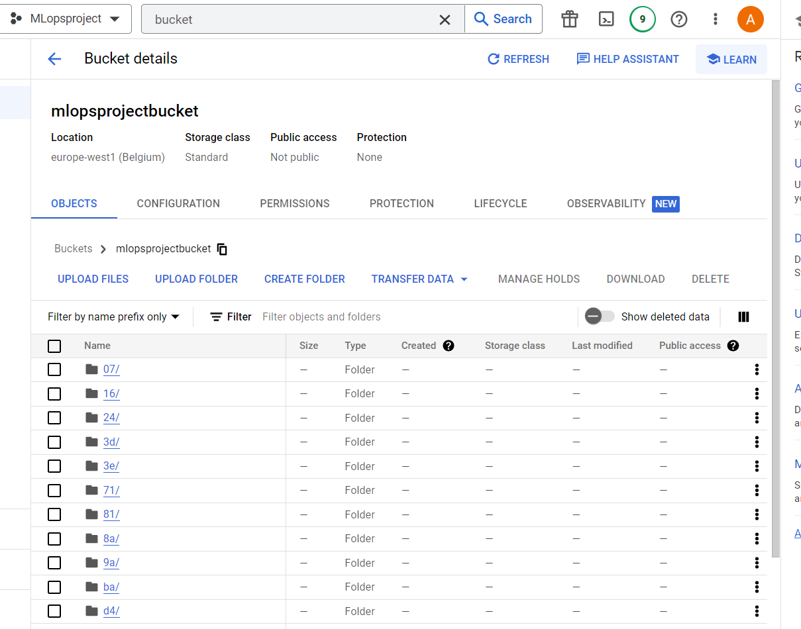
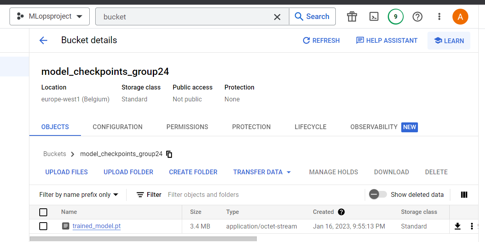
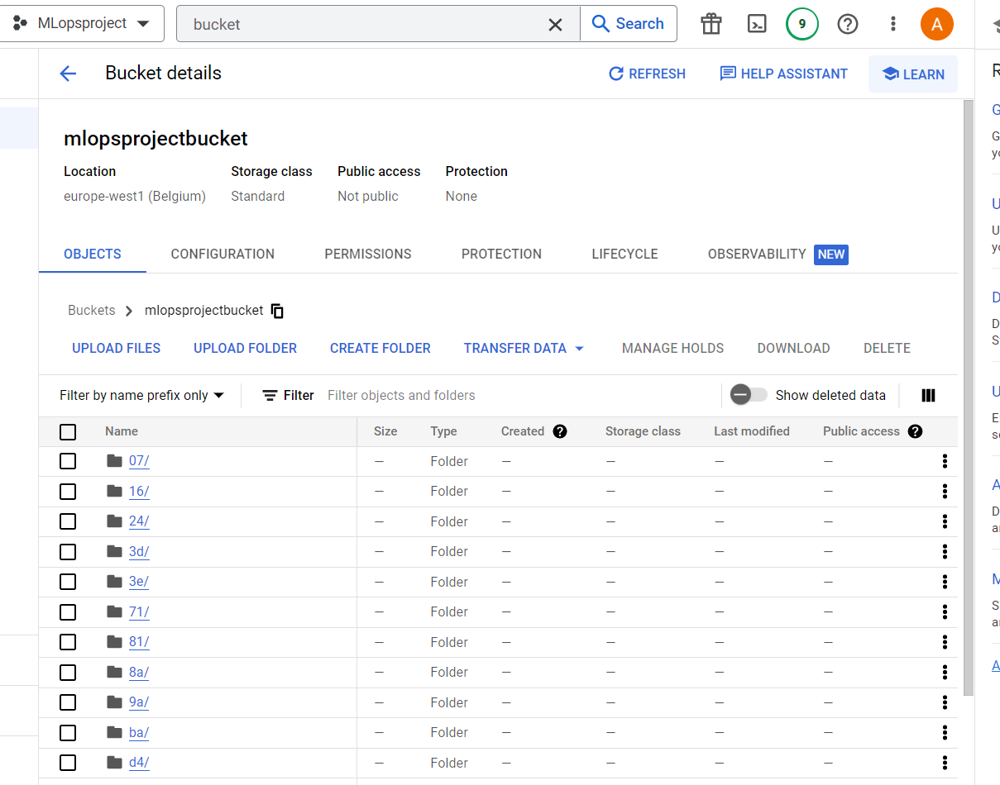
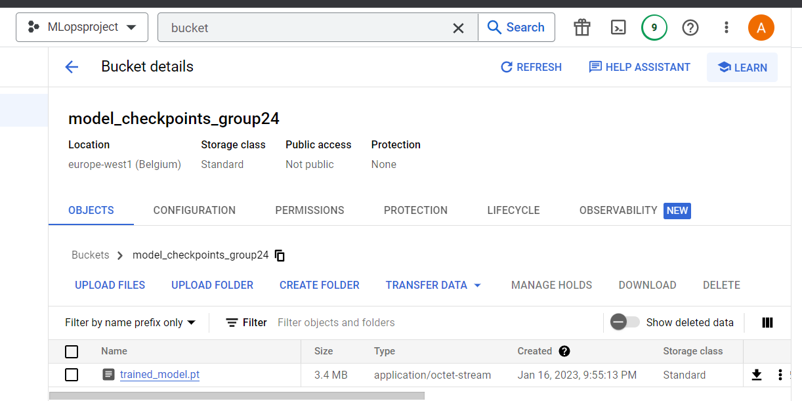
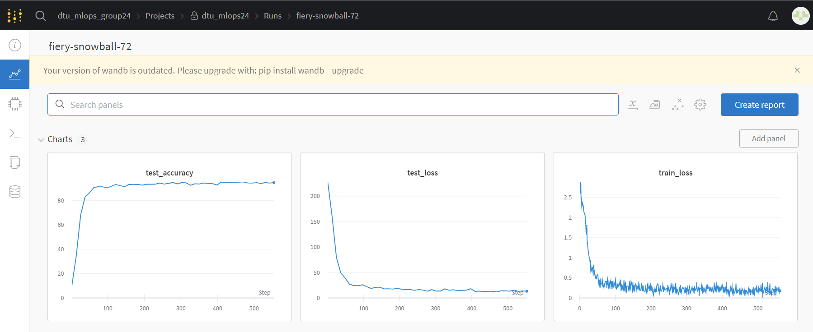
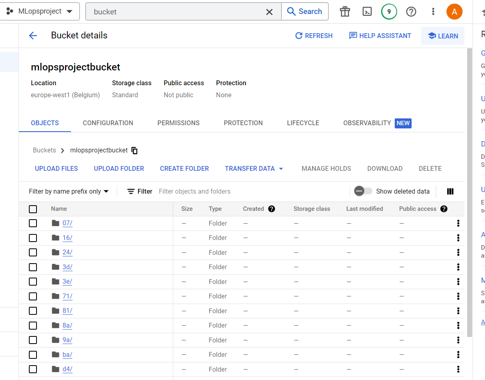
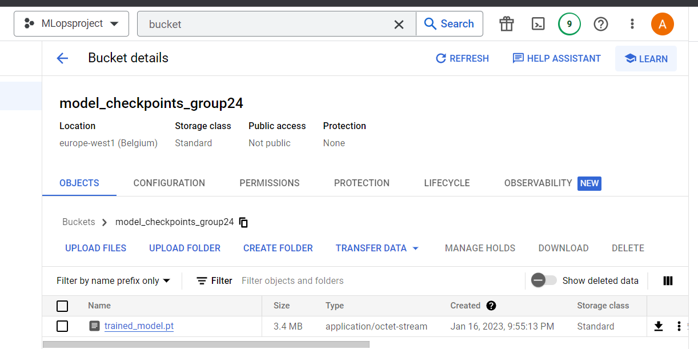
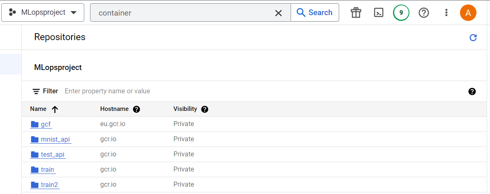
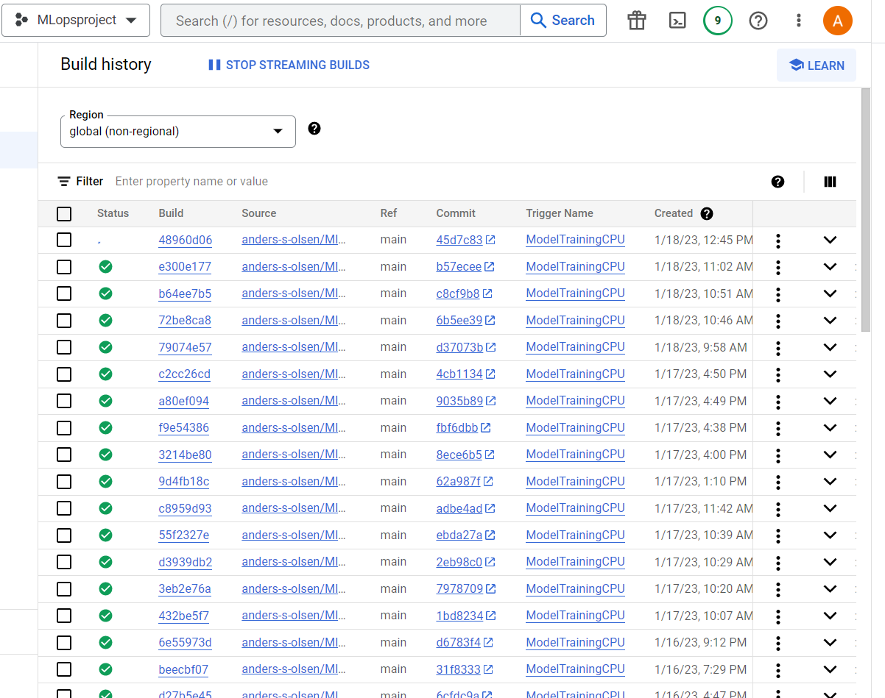
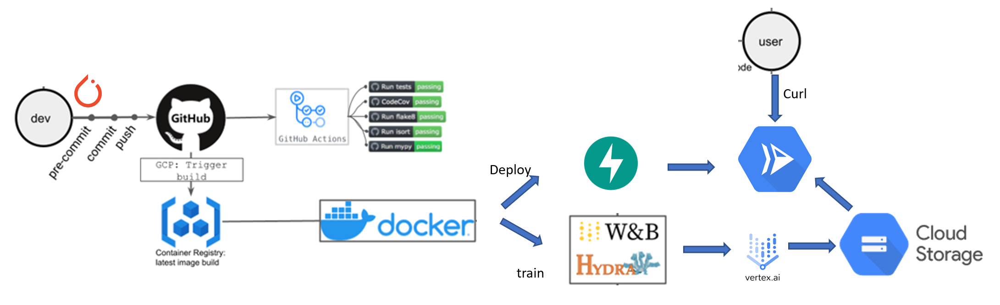

{kind=link}
{kind=link}
 


This is the report template for the exam. Please only remove the text formatted as with three dashes in front and behind like:
--- question 1 fill here ---
where you instead should add your answers. Any other changes may have unwanted consequences when your report is auto
generated in the end of the course. For questions where you are asked to include images, start by adding the image to
the figures subfolder (please only use .png, .jpg or .jpeg) and then add the following code in your answer:
markdown

In addition to this markdown file, we also provide the report.py script that provides two utility functions:
Running:
bash
python report.py html
will generate an .html page of your report. After deadline for answering this template, we will autoscrape
everything in this reports folder and then use this utility to generate an .html page that will be your serve
as your final handin.
Running
bash
python report.py check
will check your answers in this template against the constrains listed for each question e.g. is your answer too short, too long, have you included an image when asked to.
For both functions to work it is important that you do not rename anything. The script have two dependencies that can
be installed with pip install click markdown.
The checklist is exhaustive which means that it includes everything that you could possible do on the project in relation the curricilum in this course. Therefore, we do not expect at all that you have checked of all boxes at the end of the project.
make_dataset.py file such that it downloads whatever data you need andrequirements.txt file with whatever dependencies that you are usingpep8) while doing the projectEnter the group number you signed up on
Answer:
24
Enter the study number for each member in the group
Example:
sXXXXXX, sXXXXXX, sXXXXXX
Answer:
s184073, s184291, s184058, ansol
What framework did you choose to work with and did it help you complete the project?
Answer length: 100-200 words.
Example: We used the third-party framework ... in our project. We used functionality ... and functionality ... from the package to do ... and ... in our project.
Answer:
We used Pytorch and the transformers ecosystem, specifically vision transformers from the package vit-pytorch. We aimed to do MNIST classification using a SOTA model. The vit-pytorch package is extremely easy to work with since it requires only few lines of code, leaving us to only set up code for training and prediction. The framework worked fine, giving us a 95% test accuracy and feasible training computation time when using the cloud. Besides pytorch we used git, cookiecutter, github actions, dvc, docker, hydra, weights and biases, google cloud for building docker containers, training our model, and running API for prediction and to check for data drifting and performance of the deployed model.
In the following section we are interested in learning more about you local development environment.
Explain how you managed dependencies in your project? Explain the process a new team member would have to go through to get an exact copy of your environment.
Answer length: 100-200 words
Example: We used ... for managing our dependencies. The list of dependencies was auto-generated using ... . To get a complete copy of our development enviroment, one would have to run the following commands
Answer:
We used pip for managing our dependencies. The list of dependencies was auto-generated using pipreqs. To get a
complete copy of our development enviroment, one would have to set up a virtual environment with python3 and then run
bash
pip install -r requirements.txt
Alternatively it is possibly to open a virtual machine with our docker container for training or for predicting, which then has all the necessary dependencies installed. The Docker image then also has the same python version as the one we used and the same operating system and so on. The downside to docker is that the image has to be built whenever the list of dependencies is updated. However, it worked for us to just have a list of dependencies.
We expect that you initialized your project using the cookiecutter template. Explain the overall structure of your code. Did you fill out every folder or only a subset?
Answer length: 100-200 words
Example: From the cookiecutter template we have filled out the ... , ... and ... folder. We have removed the ... folder because we did not use any ... in our project. We have added an ... folder that contains ... for running our experiments. Answer:
From the cookiecutter template we have filled out the data/raw and data/processed with raw and processed data by running the script src/data/make_dataset.py. We have also used the models/ folder for saving our interim trained models (the final trained models are in the cloud). We have also used the src/data and src/models folders for our python scripts to generate the dataset, train our model, and predict labels from new observations. We have removed the data/interim, data/external folder, references/ and the docs/ folder since our documentation is in the reports/ folder. Finally, we have used the Makefile, setup.py and requirements.txt initialized by cookiecutter.
Did you implement any rules for code quality and format? Additionally, explain with your own words why these concepts matters in larger projects.
Answer length: 50-100 words.
Answer:
We have implemented flake8 to check for pep8 compliance on Github actions. Thus, whenever something is pushed, Github actions checks our python scripts for compliance. Code quality and format guidelines matter in larger projects since it should be possible to take over from one another. I.e., when one person has worked on a script, it should be easy for the next to understand what the first one has written. Name formatting etc makes it easier to know what types of variables and functions are in use.
In the following section we are interested in how version control was used in your project during development to corporate and increase the quality of your code.
How many tests did you implement and what are they testing in your code?
Answer length: 50-100 words.
Example: In total we have implemented X tests. Primarily we are testing ... and ... as these the most critical parts of our application but also ... .
Answer:
We have implemented 3 tests on Github actions which run whenever we push something to the repository. Primarily we are testing whether the vit-pytorch output is not empty. We also check that the output from vit-pytorch has the correct shape. These are the most critical parts of our application which we do not control ourselves.
What is the total code coverage (in percentage) of your code? If you code had an code coverage of 100% (or close to), would you still trust it to be error free? Explain you reasoning.
Answer length: 100-200 words.
Example: The total code coverage of code is X%, which includes all our source code. We are far from 100% coverage of our code and even if we were then...*
Answer:
We did not calculate the coverage. However, even if we had included code checks for 100% of our code, there are still multiple ways each line of code could fail and, thus, one test for each line is often not enough. It is also tedious to implement checks for every single part of the code so often it is preferred to prioritize the most important parts and implement several checks for these. Had we made a product which other people use and depend on, we would probably have made a much larger effort to keep both coverage high and make several tests for the most important parts of our code.
Did you workflow include using branches and pull requests? If yes, explain how. If not, explain how branches and pull request can help improve version control.
Answer length: 100-200 words.
Example: We made use of both branches and PRs in our project. In our group, each member had an branch that they worked on in addition to the main branch. To merge code we ...
Answer:
Our work did include branches, however, we have not used pull requests. Instead we have merged branches since the branches we had did not diverge, i.e., merging did not provide any failures, since each group member often worked on a seperate part of the project. However, in a larger organization PRs are often necessary to maintain quality control. For example, one person may have made a mistake that could be caught by having another look through the code in a pull request. In this project we were also developing all the time - had we had a final product that we wanted to change, PRs would make a lot of sense.
Did you use DVC for managing data in your project? If yes, then how did it improve your project to have version control of your data. If no, explain a case where it would be beneficial to have version control of your data.
Answer length: 100-200 words.
Example: We did make use of DVC in the following way: ... . In the end it helped us in ... for controlling ... part of our pipeline
Answer:
We made use of DVC in the following way: To begin with, we had the MNIST data stored in a Google drive account that we all had access to. Later in the project we set up a storage bucket in Google cloud. DVC helped us ensure data quality by always having a version of data in the cloud. We used Google cloud storage to keep most of our pipeline using the same online tool. Likewise, DVC works well with git, so it is quite easy to incorporate. In the end it helped us in controlling the make-dataset part of our pipeline and made things easier when training our model. It also ensured that the if the raw data had been faultily changed we could roll the change back.
Discuss you continues integration setup. What kind of CI are you running (unittesting, linting, etc.)? Do you test multiple operating systems, python version etc. Do you make use of caching? Feel free to insert a link to one of your github actions workflow.
Answer length: 200-300 words.
Example: We have organized our CI into 3 separate files: one for doing ..., one for running ... testing and one for running ... . In particular for our ..., we used ... .An example of a triggered workflow can be seen here:
Answer:
As previously mentioned we set up testing of parts of our code on Github actions. This runs whenever something is pushed to the repository. In addition to unit testing, where we mainly tested the vit-pytorch model outputs, we also implemented flake8 for controlling pep8 compliance and a mechanism to sort package imports in our scripts. As previously mentioned, code formatting can be very important when working in groups to ensure that understanding someone else's code is easy and remove potential mistakes with origin in misunderstanding code. It often happens that the Github action fails when checking for code compliance, and it is therefore often preferred to have an automatic code formatter. Another part of code formatting is ensuring that package imports is in a sensible order. Here we used isort which sorts packages in groups, where the packages that come with the original python installation, such as os and sys are in the first group, and third-party packages are in another group. Likewise, the packages are sorted alphabetically.
We used Docker containers for most of our work. For example, for the training part, we had a Docker file that we set to automatically build on Google's cloud build whenever something was pushed to the repository. In this way, it was easy to change parts of the code in our editor, push the changes to the repository, wait for the Docker image to be built, and then set up training which pushed a trained model with weights etc. to its own storage bucket which is then pulled by the prediction API.
In the following section we are interested in learning more about the experimental setup for running your code and especially the reproducibility of your experiments.
How did you configure experiments? Did you make use of config files? Explain with coding examples of how you would run a experiment.
Answer length: 50-100 words.
Example: We used a simple argparser, that worked in the following way: python my_script.py --lr 1e-3 --batch_size 25
Answer:
We made use of Hydra with a specified config file with hyperparameters for training the model. For example, the Hydra file included batch-size, learning rate, and number of epochs. This config file was automatically loaded as part of the training script to ensure reproducibility across experiments (more config files could be used).
Reproducibility of experiments are important. Related to the last question, how did you secure that no information is lost when running experiments and that your experiments are reproducible?
Answer length: 100-200 words.
Example: We made use of config files. Whenever an experiment is run the following happens: ... . To reproduce an experiment one would have to do ...
Answer:
We made use of config files and Weights & Biases. As previously mentioned the Hydra config file specified certain hyperparameters and we could easily make several config files to explore these hyperparameters. Secondly we used Weights & Biases to track training of our model and ensure that the model produces good test accuracy. Here we also learned the approximate number of epochs that made sense for our training script. We had set up a team folder on Wandb to ensure all team members had access to the training documentation. The Wandb files are never deleted, which helps making sure that we know the hyperparameters used.
Upload 1 to 3 screenshots that show the experiments that you have done in W&B (or another experiment tracking service of your choice). This may include loss graphs, logged images, hyperparameter sweeps etc. You can take inspiration from this figure. Explain what metrics you are tracking and why they are important.
Answer length: 200-300 words + 1 to 3 screenshots.
Example: As seen in the first image when have tracked ... and ... which both inform us about ... in our experiments. As seen in the second image we are also tracking ... and ...
Answer:

As seen in the first image we have tracked training loss, test loss and test accuracy in our experiments. Since we are working with classification of images, having a classification accuracy makes a lot of sense. For example, we can see that the test accuracy converged at around 95%. The train loss informs on potential overfitting on data and the noise in the training loss reveals the general range that we can expect a batch to change our training loss with. Such information could be used to tweak the learning rate.
In general we did not investigate a range of hyperparameters (sweep), which is one of the things than Weights and Biases could be used for. Instead we focused on implementing an already-developed model (in vit-pytorch) and implementing all of the other tools taught in the course. If we had focused on optimizing hyperparameters we could have achieved a higher classification accuracy, however, this was not the primary goal in this project. Rather, we focused on the synergy between Weights and Biases and, e.g., training using Vertex AI and using configuration files with Hydra and so on. Likewise, we also learned how to include Weights and Biases in Docker containers to ensure that even if the image is run by someone else in the group, we could all still se the training progression in Weights and Biases.
Docker is an important tool for creating containerized applications. Explain how you used docker in your experiments? Include how you would run your docker images and include a link to one of your docker files.
Answer length: 100-200 words.
Example: For our project we developed several images: one for training, inference and deployment. For example to run the training docker image:
docker run trainer:latest lr=1e-3 batch_size=64. Link to docker file:Answer:
We used Docker in several ways. Docker is important to ensure reproducibility across machines where other stuff than just package dependencies may cause issues, for example operating systems and python versions. We had one docker file for training and one for deployment. The training docker file was triggered to build automatically upon a push to the repository main branch, since building could take several hours on a local pc. We then imported the docker image to Vertex AI for training. The Docker image for deployment was built locally and then pushed to the container registry in GCP from where it was deployed using GCP run.
When running into bugs while trying to run your experiments, how did you perform debugging? Additionally, did you try to profile your code or do you think it is already perfect?
Answer length: 100-200 words.
Example: Debugging method was dependent on group member. Some just used ... and others used ... . We did a single profiling run of our main code at some point that showed ...
Answer:
Debugging method was dependent on group member. Some group members used visual studio code for debugging the python scripts using the built-in debugger. In addition, the building of docker images and training of model on the GCP both failed a substantial amount of times, where we used the individual logs on GCP for debugging. We did not do any profiling of our code since vit-pytorch is an external package and the training and prediction scripts are mainly boilerplate. However, in Weights and Biases we have an overview of the total amount of time taken to run the computations using the specified hyperparameters.
In the following section we would like to know more about your experience when developing in the cloud.
List all the GCP services that you made use of in your project and shortly explain what each service does?
Answer length: 50-200 words.
Example: We used the following two services: Engine and Bucket. Engine is used for... and Bucket is used for...
Answer:
We used Cloud build with a trigger for building training container images, container registry for having an overview of the images where also the deployment images were pushed to, Vertex AI for training using the container image for training, and finally we used cloud run for deployment of the prediction image.
--- question 17 fill here ---
The backbone of GCP is the Compute engine. Explained how you made use of this service and what type of VMs you used?
Answer length: 100-200 words.
Example: We used the compute engine to run our ... . We used instances with the following hardware: ... and we started the using a custom container: ...
Answer:
We did not use the compute engine, but instead used Vertex AI for training our model. We had pushed a Docker image to the container registry, where the docker-file contained an entrypoint to our training script. Thus, when everything was working, it was fairly straightforward to start model training using Vertex AI. We had also setup GPU support, however, Vertex AI has specific quotas for GPUs which we did not manage to increase within the time frame. The training script was set up to export a trained model to GCP storage bucket. In the future it would perhaps be easier to use the compute engine without an entrypoint to do debugging.
Insert 1-2 images of your GCP bucket, such that we can see what data you have stored in it. You can take inspiration from this figure.
Answer:


Upload one image of your GCP container registry, such that we can see the different images that you have stored. You can take inspiration from this figure.
Answer:

Upload one image of your GCP cloud build history, so we can see the history of the images that have been build in your project. You can take inspiration from this figure.
Answer:

Did you manage to deploy your model, either in locally or cloud? If not, describe why. If yes, describe how and preferably how you invoke your deployed service?
Answer length: 100-200 words.
Example: For deployment we wrapped our model into application using ... . We first tried locally serving the model, which worked. Afterwards we deployed it in the cloud, using ... . To invoke the service an user would call
curl -X POST -F "file=@file.json"<weburl>Answer:
For deployment we wrapped our model into an application using FastAPI. We first tried locally serving the model, which
worked. We used Docker for building an image of out prediction application, and the image was pushed to the GCP container registry. Afterwards we deployed the image in the cloud, using GCP run. To invoke the service a user would call:
bash
curl -X 'POST' \
'https://mnist-api-final1-x23vfage7a-ew.a.run.app/predict/' \
-H 'accept: application/json' \
-H 'Content-Type: multipart/form-data' \
-F 'input=@mnist_example.png;type=image/png'
The above example works when standing in the root of our repository and using the mnist_example.png. It should be easy to change the example image to something else. As such it should be easy to make our app into an application that can be called whenever an image label prediction is needed.
Did you manage to implement monitoring of your deployed model? If yes, explain how it works. If not, explain how monitoring would help the longevity of your application.
Answer length: 100-200 words.
Example: We did not manage to implement monitoring. We would like to have monitoring implemented such that over time we could measure ... and ... that would inform us about this ... behaviour of our application.
Answer:
We implemented data drift monitoring for our application. However, we have not used our deployed model with many different test images, so we haven't tested whether the monitoring works as specified. Monitoring helps the longevity of applications such as ours. For one, monitoring data drift can ensure that real world use cases correspond to the training data. If not, a trigger can be set up to alert the developer that the data going into the prediction API does not correspond to the data used for training. Such information can be critical for some applications, such as for recommender systems where it is important to always stay up to date with the latest search inquiries.
How many credits did you end up using during the project and what service was most expensive?
Answer length: 25-100 words.
Example: Group member 1 used ..., Group member 2 used ..., in total ... credits was spend during development. The service costing the most was ... due to ...
Answer:
We only used $10.04 in our project. In general we used GCP for many different things, including hosting data, building docker images, training model and deploying the model. However, our data storage requirements weren't huge and training was quite fast. As such, we did not use that many of our credits.
In the following section we would like you to think about the general structure of your project.
Include a figure that describes the overall architecture of your system and what services that you make use of. You can take inspiration from this figure. Additionally in your own words, explain the overall steps in figure.
Answer length: 200-400 words
Example:
The starting point of the diagram is our local setup, where we integrated ... and ... and ... into our code. Whenever we commit code and puch to github, it auto triggers ... and ... . From there the diagram shows ...
Answer:
The starting point of the diagram is our local development setup, where we integrated pytorch, vit-pytorch, Hydra and Wandb. Here we made code for downloading and preprocessing the dataset, training the model, and predicting using the trained model. Whenever code was pushed to Github, a test for pep8 compliance would run as well as some tests on Github Actions. Likewise, GCP would be triggered into building the container images based on the Docker files in the repository for both training and prediction. These images would land in the container registry. From there we can go towards training where we used Vertex AI. Both Wandb and Hydra was implemented in our training setup so we could view training progress and accuracy on the wandb webpage. The fainal trained model would be pushed to Google cloud storage. The prediction part was developed using FastAPI (again using a Docker container) and subsequently using GCP run, which then pulls the latest trained model from GCP cloud storage bucket. Finally, a user would be able to use a simple curl command to get a prediction on an image. The overview doesn't show the intermediate steps taken during development such as initializing git and dvc as well as debugging practices and use of pipreqs to note reuirements and make the repository easy to use for another developer.

Discuss the overall struggles of the project. Where did you spend most time and what did you do to overcome these challenges?
Answer length: 200-400 words.
Example: The biggest challenges in the project was using ... tool to do ... . The reason for this was ...
Answer:
We had several challenges during this project, and most of them concerned getting the different tools to work, and get them to work together. For example, one of the biggest challenges was using Vertex AI for training, since this required Docker build to work as well as all of the minor dependencies, such as including a wandb API key in the script. Building a docker image on GCP easily takes 20 minutes and both the Docker image and the subsequent training could fail, requiring further debugging. Furthermore, the GCP documentation is not very user friendly and can take a long time to understand. We also thought that we had access to GPUs, since we requested an increased quota which was approves immediately. However, it turned out that Vertex AI has their own quotas which we did not get to increase before we had moved on.
Hvad var ellers svært?
State the individual contributions of each team member. This is required information from DTU, because we need to make sure all members contributed actively to the project
Answer length: 50-200 words.
Example: Student sXXXXXX was in charge of developing of setting up the initial cookie cutter project and developing of the docker containers for training our applications. Student sXXXXXX was in charge of training our models in the cloud and deploying them afterwards. All members contributed to code by...
Answer:
Student ansol was in charge of developing the training part of the pipeline. Student s184291 was in charge of developing unit tests, pre-commit and Github actions for the project Student s184073 was in charge of deployment and the prediction part of the project Student s184058 was in charge of deployment and the prediction part of the project
{kind=link}
{kind=link}
{kind=link}